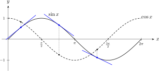
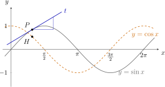
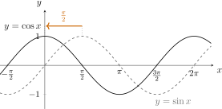
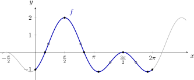
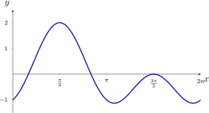
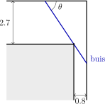
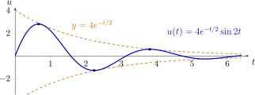

Hoofdstuk 19Verloop van
goniometrische functies

Leerplandoelstellingen (GO! Navigator)
Gevorderde wiskunde (WD3_06.08)
-
• WD3_06.08.28 De leerlingen berekenen de afgeleide functie van functies die zijn opgebouwd uit veeltermfuncties, rationale functies, irrationale functies, exponentiële functies, logaritmische functies, goniometrische functies en cyclometrische functies.
-
– afbakening: afleidbaarheid
-
– afbakening: rekenregels: afgeleide van een som, product, quotiënt van functies en afgeleide van een samengestelde functie (kettingregel)
-
– afbakening: regel van de l’Hôpital
-
– WD3_06.08.28.01 (MD 06.08.17) De leerlingen berekenen de afgeleide functie van functies die zijn opgebouwd uit veeltermfuncties, rationale functies, irrationale functies, exponentiële functies, logaritmische functies en goniometrische functies.
-
– WD3_06.08.28.02 De leerlingen berekenen de afgeleide functie van functies die zijn opgebouwd uit cyclometrische functies.
-
-
• WD3_06.08.29 (MD 06.08.18) De leerlingen analyseren het verloop van functies met behulp van de eerste en tweede afgeleide functie en lossen extremumproblemen op.
-
– afbakening: stelling van Rolle, middelwaardestelling van Lagrange
-
I Herhaling
De grafieken en de eigenschappen van \(\sin \), \(\cos \), \(\tan \) en \(\cot \) kennen we uit hoofdstuk 9. Zie ook handboek VBTL Analyse 3, p 107 tot 110. In dit hoofdstuk leiden we die functies af.
II Afgeleide van sinus en cosinus
1 Afgeleide van \(\sin x\)
Neem \(f(x)=\sin x\). Met de definitie van het afgeleid getal is
\(\seteqnumber{0}{}{0}\)\begin{align*} f'(a) &= \lim _{x\to a}\frac {\sin x-\sin a}{x-a}\\ &= \vov {\dfrac {0}{0}} && \text {VOV}\\ &\mathrel{\rlap{\hspace{0.389em}\bbox[0px,border-left:0.3pt solid lightgray]{\vphantom{\text{\small$\begin{aligned} \sin p-\sin q &= 2\cos \frac {p+q}{2}\,\sin \frac {p-q}{2} \end{aligned}$}}}}\phantom{=}}\qquad\qquad\text{\small$\begin{aligned} \sin p-\sin q &= 2\cos \frac {p+q}{2}\,\sin \frac {p-q}{2} \end{aligned}$}\\ &= \lim _{x\to a}\frac {2\cos \frac {x+a}{2}\,\sin \frac {x-a}{2}}{x-a} && (\text {Simpson})\\ &= \lim _{x\to a}\left (\cos \frac {x+a}{2}\cdot \frac {\sin \frac {x-a}{2}}{\frac {x-a}{2}}\right ). \end{align*} Stel nu \(u=\frac {x-a}{2}\). Als \(x\to a\), dan \(u\to 0\) en dus
\(\seteqnumber{0}{}{0}\)\begin{align*} f'(a) &= \cos \frac {a+a}{2}\cdot \lim _{u\to 0}\frac {\sin u}{u}\\ &\mathrel{\rlap{\hspace{0.389em}\bbox[0px,border-left:0.3pt solid lightgray]{\vphantom{\text{\small$\begin{aligned} \lim _{u\to 0}\frac {\sin u}{u} &= 1 \end{aligned}$}}}}\phantom{=}}\qquad\qquad\text{\small$\begin{aligned} \lim _{u\to 0}\frac {\sin u}{u} &= 1 \end{aligned}$}\\ &= \cos a\cdot 1\\ &= \cos a. \end{align*} Daaruit volgt
\[ \boxed {(\sin x)'=\cos x} \]
En wegens de kettingregel
\[ \boxed {\bigl (\sin f(x)\bigr )'=\cos f(x)\cdot f'(x)} \]
2 Afgeleide van \(\cos x\)
De definitie van het afgeleid getal is hier niet meer nodig. De cosinus van een hoek is de sinus van de complementaire hoek, en de afgeleide van de sinus kennen we nu. Met de kettingregel uit hoofdstuk 16 volgt
\(\seteqnumber{0}{}{0}\)\begin{align*} (\cos x)' &= \Bigl (\sin \bigl (\tfrac {\pi }{2}-x\bigr )\Bigr )' && (\text {complementaire hoeken})\\ &= \cos \bigl (\tfrac {\pi }{2}-x\bigr )\cdot \bigl (\tfrac {\pi }{2}-x\bigr )' && (\text {kettingregel})\\ &= \sin x\cdot (-1) && (\text {complementaire hoeken})\\ &= -\sin x. \end{align*}
\[ \boxed {(\cos x)'=-\sin x} \]
En wegens de kettingregel
\[ \boxed {\bigl (\cos f(x)\bigr )'=-\sin f(x)\cdot f'(x)} \]
3 Meetkundige betekenis
Het afgeleid getal van \(\sin x\) in \(a\) is de rico van de raaklijn aan de sinusgrafiek in \(\bigl (a,\sin a\bigr )\). Die rico is dus telkens \(\cos a\). In \(0\) is de helling \(\cos 0=1\): daar valt de raaklijn samen met de rechte \(y=x\). In \(\frac {\pi }{2}\) is de helling \(0\): daar ligt de top.

Waar \(\sin x\) stijgt, is de afgeleide positief; waar \(\sin x\) daalt, negatief. De hellingen van de sinusgrafiek vormen dus opnieuw een golf: de cosinusgrafiek.
4 Voorbeelden
Bereken de volgende afgeleiden.
-
(a) \((\sin 3x)'\)
\((\sin 3x)' = 3\cos 3x\)
\(\seteqnumber{0}{}{0}\)\begin{align*} (\sin 3x)' &= \cos 3x\cdot (3x)'\\ &= 3\cos 3x. \end{align*}
-
(b) \(\bigl (\cos (x^2)\bigr )'\)
\(\bigl (\cos (x^2)\bigr )' = -2x\sin (x^2)\)
\(\seteqnumber{0}{}{0}\)\begin{align*} \bigl (\cos (x^2)\bigr )' &= -\sin (x^2)\cdot (x^2)'\\ &= -2x\sin (x^2). \end{align*}
-
(c) \((\sin ^2 x)'\)
\((\sin ^2 x)' = \sin 2x\) Let op: \(\sin ^2 x=(\sin x)^2\), een macht van een functie.
\(\seteqnumber{0}{}{0}\)\begin{align*} (\sin ^2 x)' &= 2\sin x\cdot (\sin x)'\\ &= 2\sin x\cos x\\ &= \sin 2x. \end{align*}
-
(d) \((x\sin x)'\)
\((x\sin x)' = \sin x+x\cos x\)
\(\seteqnumber{0}{}{0}\)\begin{align*} (x\sin x)' &= (x)'\sin x+x\,(\sin x)'\\ &= \sin x+x\cos x. \end{align*}
-
(e) \(\bigl (\cos ^3 2x\bigr )'\)
\(\bigl (\cos ^3 2x\bigr )' = -6\cos ^2 2x\,\sin 2x\) De kettingregel twee keer: eerst de macht, dan de cosinus, dan \(2x\).
\(\seteqnumber{0}{}{0}\)\begin{align*} \bigl (\cos ^3 2x\bigr )' &= 3\cos ^2 2x\cdot (\cos 2x)'\\ &= 3\cos ^2 2x\cdot (-\sin 2x)\cdot (2x)'\\ &= -6\cos ^2 2x\,\sin 2x. \end{align*}
-
(f) \((\sin x\cos x)'\)
\((\sin x\cos x)' = \cos 2x\)
\(\seteqnumber{0}{}{0}\)\begin{align*} (\sin x\cos x)' &= (\sin x)'\cos x+\sin x\,(\cos x)'\\ &= \cos x\cos x+\sin x\cdot (-\sin x)\\ &= \cos ^2 x-\sin ^2 x\\ &= \cos 2x. \end{align*} Ter controle: \(\sin x\cos x=\frac 12\sin 2x\), dus de afgeleide is \(\frac 12\cos 2x\cdot 2=\cos 2x\).
-
(g) \(\bigl (\sqrt {1+\cos x}\,\bigr )'\)
\(\bigl (\sqrt {1+\cos x}\,\bigr )' = \frac {-\sin x}{2\sqrt {1+\cos x}}\)
\(\seteqnumber{0}{}{0}\)\begin{align*} \bigl (\sqrt {1+\cos x}\,\bigr )' &= \frac {1}{2\sqrt {1+\cos x}}\cdot (1+\cos x)'\\ &= \frac {-\sin x}{2\sqrt {1+\cos x}}. \end{align*}
-
(h) \(\left (\dfrac {\sin x}{x}\right )'\)
\(\left (\frac {\sin x}{x}\right )' = \frac {x\cos x-\sin x}{x^2}\)
\(\seteqnumber{0}{}{0}\)\begin{align*} \left (\frac {\sin x}{x}\right )' &= \frac {(\sin x)'\cdot x-\sin x\cdot (x)'}{x^2}\\ &= \frac {x\cos x-\sin x}{x^2}. \end{align*}
-
(i) \(\bigl (e^{-x}\sin x\bigr )'\)
\(\bigl (e^{-x}\sin x\bigr )' = e^{-x}(\cos x-\sin x)\)
\(\seteqnumber{0}{}{0}\)\begin{align*} \bigl (e^{-x}\sin x\bigr )' &= \bigl (e^{-x}\bigr )'\sin x+e^{-x}(\sin x)'\\ &= -e^{-x}\sin x+e^{-x}\cos x\\ &= e^{-x}(\cos x-\sin x). \end{align*}
-
(j) \(\Bigl (\sin \bigl (\frac {\pi }{3}-2x\bigr )\Bigr )'\)
\(\Bigl (\sin \bigl (\frac {\pi }{3}-2x\bigr )\Bigr )' = -2\cos \bigl (\frac {\pi }{3}-2x\bigr )\)
\(\seteqnumber{0}{}{0}\)\begin{align*} \Bigl (\sin \bigl (\tfrac {\pi }{3}-2x\bigr )\Bigr )' &= \cos \bigl (\tfrac {\pi }{3}-2x\bigr )\cdot \bigl (\tfrac {\pi }{3}-2x\bigr )'\\ &= -2\cos \bigl (\tfrac {\pi }{3}-2x\bigr ). \end{align*}
-
(k) \((3\sin x-2\cos x)'\)
\((3\sin x-2\cos x)' = 3\cos x+2\sin x\)
\(\seteqnumber{0}{}{0}\)\begin{align*} (3\sin x-2\cos x)' &= 3\cos x-2\cdot (-\sin x)\\ &= 3\cos x+2\sin x. \end{align*}
-
(l) \(\Bigl (\cos \bigl (4x+\frac {\pi }{6}\bigr )\Bigr )'\)
\(\Bigl (\cos \bigl (4x+\frac {\pi }{6}\bigr )\Bigr )' = -4\sin \bigl (4x+\frac {\pi }{6}\bigr )\)
\(\seteqnumber{0}{}{0}\)\begin{align*} \Bigl (\cos \bigl (4x+\tfrac {\pi }{6}\bigr )\Bigr )' &= -\sin \bigl (4x+\tfrac {\pi }{6}\bigr )\cdot 4\\ &= -4\sin \bigl (4x+\tfrac {\pi }{6}\bigr ). \end{align*}
-
(m) \((x^2\cos x)'\)
\((x^2\cos x)' = x(2\cos x-x\sin x)\)
\(\seteqnumber{0}{}{0}\)\begin{align*} (x^2\cos x)' &= 2x\cos x+x^2\cdot (-\sin x)\\ &= x(2\cos x-x\sin x). \end{align*}
-
(n) \((\sin ^3 x)'\)
\((\sin ^3 x)' = 3\sin ^2 x\cos x\)
\(\seteqnumber{0}{}{0}\)\begin{align*} (\sin ^3 x)' &= 3\sin ^2 x\cdot (\sin x)'\\ &= 3\sin ^2 x\cos x. \end{align*}
-
(o) \(\bigl (\sin (\cos x)\bigr )'\)
\(\bigl (\sin (\cos x)\bigr )' = -\sin x\,\cos (\cos x)\)
\(\seteqnumber{0}{}{0}\)\begin{align*} \bigl (\sin (\cos x)\bigr )' &= \cos (\cos x)\cdot (\cos x)'\\ &= -\sin x\,\cos (\cos x). \end{align*}
-
(p) \(\left (\dfrac {\cos x}{1-\sin x}\right )'\)
\(\left (\frac {\cos x}{1-\sin x}\right )' = \frac {1}{1-\sin x}\)
\(\seteqnumber{0}{}{0}\)\begin{align*} \left (\frac {\cos x}{1-\sin x}\right )' &= \frac {-\sin x\,(1-\sin x)-\cos x\cdot (-\cos x)}{(1-\sin x)^2}\\ &= \frac {-\sin x+\sin ^2 x+\cos ^2 x}{(1-\sin x)^2}\\ &= \frac {1-\sin x}{(1-\sin x)^2}\\ &= \frac {1}{1-\sin x}. \end{align*}
-
(q) \(\bigl (\ln (1+\cos ^2 x)\bigr )'\)
\(\bigl (\ln (1+\cos ^2 x)\bigr )' = \frac {-\sin 2x}{1+\cos ^2 x}\)
\(\seteqnumber{0}{}{0}\)\begin{align*} \bigl (\ln (1+\cos ^2 x)\bigr )' &= \frac {(1+\cos ^2 x)'}{1+\cos ^2 x}\\ &= \frac {2\cos x\cdot (-\sin x)}{1+\cos ^2 x}\\ &= \frac {-\sin 2x}{1+\cos ^2 x}. \end{align*}
-
(r) \(\bigl (e^{\cos 2x}\bigr )'\)
\(\bigl (e^{\cos 2x}\bigr )' = -2\sin 2x\,e^{\cos 2x}\)
\(\seteqnumber{0}{}{0}\)\begin{align*} \bigl (e^{\cos 2x}\bigr )' &= e^{\cos 2x}\cdot (\cos 2x)'\\ &= -2\sin 2x\,e^{\cos 2x}. \end{align*}
5 VBTL Oefeningen
VBTL Analyse 3: p 80 nr 4 (c en l); p 81 nr 10 (d); p 121 nr 1 (a, b en f tot i)
III Afgeleide van tangens en cotangens
1 Afgeleide van \(\tan x\)
Met de quotiëntregel:
\(\seteqnumber{0}{}{0}\)\begin{align*} (\tan x)' &= \left (\frac {\sin x}{\cos x}\right )'\\ &= \frac {(\sin x)'\cos x-\sin x\,(\cos x)'}{\cos ^2 x}\\ &= \frac {\cos x\cos x-\sin x\cdot (-\sin x)}{\cos ^2 x}\\ &= \frac {\cos ^2 x+\sin ^2 x}{\cos ^2 x}\\ &= \frac {1}{\cos ^2 x}. \end{align*} Splitsen we de breuk in de voorlaatste stap, dan krijgen we \(\frac {\cos ^2 x}{\cos ^2 x}+\frac {\sin ^2 x}{\cos ^2 x}=1+\tan ^2 x\). Dus
\[ \boxed {(\tan x)'=\frac {1}{\cos ^2 x}=1+\tan ^2 x} \]
En wegens de kettingregel
\[ \boxed {\bigl (\tan f(x)\bigr )'=\frac {f'(x)}{\cos ^2 f(x)}} \]
2 Afgeleide van \(\cot x\)
\(\seteqnumber{0}{}{0}\)\begin{align*} (\cot x)' &= \left (\frac {\cos x}{\sin x}\right )'\\ &= \frac {(\cos x)'\sin x-\cos x\,(\sin x)'}{\sin ^2 x}\\ &= \frac {-\sin x\sin x-\cos x\cos x}{\sin ^2 x}\\ &= \frac {-(\sin ^2 x+\cos ^2 x)}{\sin ^2 x}\\ &= \frac {-1}{\sin ^2 x}. \end{align*}
\[ \boxed {(\cot x)'=\frac {-1}{\sin ^2 x}=-(1+\cot ^2 x)} \]
En wegens de kettingregel
\[ \boxed {\bigl (\cot f(x)\bigr )'=\frac {-f'(x)}{\sin ^2 f(x)}} \]
3 Secans en cosecans
Met \(\sec x=\dfrac {1}{\cos x}\) en \(\csc x=\dfrac {1}{\sin x}\) en de regel \(\left (\dfrac 1f\right )'=\dfrac {-f'}{f^2}\) is
\(\seteqnumber{0}{}{0}\)\begin{align*} (\sec x)' &= \left (\frac {1}{\cos x}\right )'\\ &= \frac {-(\cos x)'}{\cos ^2 x}\\ &= \frac {\sin x}{\cos ^2 x}\\ &= \frac {1}{\cos x}\cdot \frac {\sin x}{\cos x}\\ &= \sec x\tan x \end{align*}
\[ \boxed {(\sec x)'=\sec x\tan x} \]
En wegens de kettingregel
\[ \boxed {\bigl (\sec f(x)\bigr )'=\sec f(x)\tan f(x)\cdot f'(x)} \]
Op dezelfde manier is
\(\seteqnumber{0}{}{0}\)\begin{align*} (\csc x)' &= \left (\frac {1}{\sin x}\right )'\\ &= \frac {-(\sin x)'}{\sin ^2 x}\\ &= \frac {-\cos x}{\sin ^2 x}\\ &= -\frac {1}{\sin x}\cdot \frac {\cos x}{\sin x}\\ &= -\csc x\cot x \end{align*}
\[ \boxed {(\csc x)'=-\csc x\cot x} \]
En wegens de kettingregel
\[ \boxed {\bigl (\csc f(x)\bigr )'=-\csc f(x)\cot f(x)\cdot f'(x)} \]
4 Overzicht
\[ \begin {array}{ll} D\sin x = \cos x & D\sin f(x) = \cos f(x)\cdot Df(x) \\[0.9em] D\cos x = -\sin x & D\cos f(x) = -\sin f(x)\cdot Df(x) \\[0.9em] D\tan x = \dfrac {1}{\cos ^2 x}
& D\tan f(x) = \dfrac {Df(x)}{\cos ^2 f(x)} \\[1.4em] D\cot x = \dfrac {-1}{\sin ^2 x} & D\cot f(x) = \dfrac {-Df(x)}{\sin ^2 f(x)} \end {array} \]
5 Voorbeelden
Bereken de volgende afgeleiden.
-
(a) \((\tan 3x)'\)
\((\tan 3x)' = \frac {3}{\cos ^2 3x}\)
\(\seteqnumber{0}{}{0}\)\begin{align*} (\tan 3x)' &= \frac {(3x)'}{\cos ^2 3x}\\ &= \frac {3}{\cos ^2 3x}. \end{align*}
-
(b) \(\bigl (\cot (x^2)\bigr )'\)
\(\bigl (\cot (x^2)\bigr )' = \frac {-2x}{\sin ^2(x^2)}\)
\(\seteqnumber{0}{}{0}\)\begin{align*} \bigl (\cot (x^2)\bigr )' &= \frac {-(x^2)'}{\sin ^2(x^2)}\\ &= \frac {-2x}{\sin ^2(x^2)}. \end{align*}
-
(c) \((\tan ^2 x)'\)
\((\tan ^2 x)' = \frac {2\tan x}{\cos ^2 x}\)
\(\seteqnumber{0}{}{0}\)\begin{align*} (\tan ^2 x)' &= 2\tan x\cdot (\tan x)'\\ &= \frac {2\tan x}{\cos ^2 x}. \end{align*}
-
(d) \((x\tan x)'\)
\((x\tan x)' = \tan x+\frac {x}{\cos ^2 x}\)
\(\seteqnumber{0}{}{0}\)\begin{align*} (x\tan x)' &= (x)'\tan x+x\,(\tan x)'\\ &= \tan x+\frac {x}{\cos ^2 x}. \end{align*}
-
(e) \((\tan x-x)'\)
\((\tan x-x)' = \tan ^2 x\)
\(\seteqnumber{0}{}{0}\)\begin{align*} (\tan x-x)' &= 1+\tan ^2 x-1\\ &= \tan ^2 x. \end{align*} Hier is de vorm \(1+\tan ^2 x\) handiger dan \(\frac {1}{\cos ^2 x}\).
-
(f) \(\bigl (\sqrt {\tan x}\,\bigr )'\)
\(\bigl (\sqrt {\tan x}\,\bigr )' = \frac {1}{2\sqrt {\tan x}\,\cos ^2 x}\)
\(\seteqnumber{0}{}{0}\)\begin{align*} \bigl (\sqrt {\tan x}\,\bigr )' &= \frac {1}{2\sqrt {\tan x}}\cdot (\tan x)'\\ &= \frac {1}{2\sqrt {\tan x}\,\cos ^2 x}. \end{align*}
-
(g) \(\left (\dfrac {1}{1+\tan x}\right )'\)
\(\left (\frac {1}{1+\tan x}\right )' = \frac {-1}{(\cos x+\sin x)^2}\)
\(\seteqnumber{0}{}{0}\)\begin{align*} \left (\frac {1}{1+\tan x}\right )' &= \frac {-(1+\tan x)'}{(1+\tan x)^2}\\ &= \frac {-\dfrac {1}{\cos ^2 x}}{(1+\tan x)^2}\\ &= \frac {-1}{\cos ^2 x\,(1+\tan x)^2}\\ &= \frac {-1}{\bigl (\cos x\,(1+\tan x)\bigr )^2}\\ &= \frac {-1}{(\cos x+\sin x)^2}. \end{align*}
-
(h) \(\bigl (\cot ^3 x\bigr )'\)
\(\bigl (\cot ^3 x\bigr )' = \frac {-3\cot ^2 x}{\sin ^2 x}\)
\(\seteqnumber{0}{}{0}\)\begin{align*} \bigl (\cot ^3 x\bigr )' &= 3\cot ^2 x\cdot (\cot x)'\\ &= 3\cot ^2 x\cdot \frac {-1}{\sin ^2 x}\\ &= \frac {-3\cot ^2 x}{\sin ^2 x}. \end{align*}
-
(i) \(\bigl (\tan \sqrt {x}\,\bigr )'\)
\(\bigl (\tan \sqrt {x}\,\bigr )' = \frac {1}{2\sqrt {x}\,\cos ^2\sqrt {x}}\)
\(\seteqnumber{0}{}{0}\)\begin{align*} \bigl (\tan \sqrt {x}\,\bigr )' &= \frac {\bigl (\sqrt {x}\bigr )'}{\cos ^2\sqrt {x}}\\ &= \frac {1}{2\sqrt {x}\,\cos ^2\sqrt {x}}. \end{align*}
-
(j) \(\left (\dfrac {1}{3}\tan ^3 x-\tan x+x\right )'\)
\(\left (\frac {1}{3}\tan ^3 x-\tan x+x\right )' = \tan ^4 x\) Met \((\tan x)'=1+\tan ^2 x\):
\(\seteqnumber{0}{}{0}\)\begin{align*} \left (\frac {1}{3}\tan ^3 x-\tan x+x\right )' &= \tan ^2 x\,(1+\tan ^2 x)-(1+\tan ^2 x)+1\\ &= \tan ^2 x+\tan ^4 x-1-\tan ^2 x+1\\ &= \tan ^4 x. \end{align*}
6 VBTL Oefeningen
Afgeleiden berekenen:
VBTL Analyse 3: p 81 nr 10 (g en h); p 82 nr 21 (f tot h en j); p 121 nr 1 (c tot e)
Raaklijn:
VBTL Analyse 3: p 122 nr 3
IV Hogere afgeleiden
1 De afgeleiden van \(\sin x\)
\[ \begin {array}{c|c|c|c|c|c} f(x) & f'(x) & f''(x) & f'''(x) & f^{(4)}(x) & f^{(5)}(x) \\ \hline \sin x & \cos x & -\sin x & -\cos x & \sin x & \cos x \end {array} \]
Na vier keer afleiden komen we terug bij \(\sin x\). Elke afleiding schuift de sinusgrafiek een kwart periode naar links: \(\cos x=\sin \bigl (x+\frac {\pi }{2}\bigr )\).

Dus
\[ \boxed {(\sin x)^{(n)}=\sin \Bigl (x+n\,\frac {\pi }{2}\Bigr )} \qquad \text {en}\qquad \boxed {(\cos x)^{(n)}=\cos \Bigl (x+n\,\frac {\pi }{2}\Bigr )}. \]
2 Voorbeelden
-
(a) Bereken \(f''(x)\) voor \(f(x)=\tan x\).
\(f''(x) = \frac {2\sin x}{\cos ^3 x}\) We schrijven \(f'(x)=\frac {1}{\cos ^2 x}=(\cos x)^{-2}\).
\(\seteqnumber{0}{}{0}\)\begin{align*} f''(x) &= -2(\cos x)^{-3}\cdot (\cos x)'\\ &= -2(\cos x)^{-3}\cdot (-\sin x)\\ &= \frac {2\sin x}{\cos ^3 x}. \end{align*}
-
(b) Toon aan dat \(y=\sin 2x\) voldoet aan \(y''+4y=0\).
\(\seteqnumber{0}{}{0}\)\begin{align*} y' &= 2\cos 2x\\ y'' &= -4\sin 2x\\[0.5em] y''+4y &= -4\sin 2x+4\sin 2x = 0. \end{align*}
-
(c) Toon aan dat \(y=e^{-x}\sin x\) voldoet aan \(y''+2y'+2y=0\).
De eerste afgeleide kennen we uit de voorbeelden bij sinus en cosinus.
\(\seteqnumber{0}{}{0}\)\begin{align*} y' &= e^{-x}(\cos x-\sin x)\\ y'' &= -e^{-x}(\cos x-\sin x)+e^{-x}(-\sin x-\cos x)\\ &= e^{-x}(-\cos x+\sin x-\sin x-\cos x)\\ &= -2e^{-x}\cos x\\[0.5em] y''+2y'+2y &= -2e^{-x}\cos x+2e^{-x}(\cos x-\sin x)+2e^{-x}\sin x\\ &= 0. \end{align*}
3 VBTL Oefeningen
VBTL Analyse 3: p 80 nr 5; p 81 nr 8; p 82 nr 17; p 121 nr 1 (j)
V De regel van de l’Hospital
1 Herhaling
Bij een onbepaalde vorm mogen we teller en noemer afzonderlijk afleiden (hoofdstuk 16):
\[ \begin {aligned} \lim _{x\to a}\frac {f(x)}{g(x)} &= \vov {\dfrac {0}{0}} \text { of } \vov {\dfrac {\infty }{\infty }}\\ &\overset {H}{=} \lim _{x\to a}\frac {f'(x)}{g'(x)}. \end {aligned} \]
Met de afgeleiden van de goniometrische functies kunnen we zo heel wat nieuwe limieten berekenen.
2 Voorbeelden
Bereken de volgende limieten.
-
(a) \(\displaystyle \lim _{x\to 0}\frac {1-\cos x}{x^2}\)
\(\lim _{x\to 0}\frac {1-\cos x}{x^2} = \frac 12\)
\(\seteqnumber{0}{}{0}\)\begin{align*} \lim _{x\to 0}\frac {1-\cos x}{x^2} &= \vov {\dfrac {0}{0}} && \text {VOV}\\ &\overset {H}{=} \lim _{x\to 0}\frac {\sin x}{2x}\\ &= \vov {\dfrac {0}{0}} && \text {VOV}\\ &\overset {H}{=} \lim _{x\to 0}\frac {\cos x}{2}\\ &= \frac 12. \end{align*} In hoofdstuk 14 vonden we dezelfde limiet met een kunstgreep. Met de regel van de l’Hospital gaat het zonder.
-
(b) \(\displaystyle \lim _{x\to 0}\frac {x-\sin x}{x^3}\)
\(\lim _{x\to 0}\frac {x-\sin x}{x^3} = \frac 16\)
\(\seteqnumber{0}{}{0}\)\begin{align*} \lim _{x\to 0}\frac {x-\sin x}{x^3} &= \vov {\dfrac {0}{0}} && \text {VOV}\\ &\overset {H}{=} \lim _{x\to 0}\frac {1-\cos x}{3x^2}\\ &= \vov {\dfrac {0}{0}} && \text {VOV}\\ &\overset {H}{=} \lim _{x\to 0}\frac {\sin x}{6x}\\ &= \frac 16\lim _{x\to 0}\frac {\sin x}{x}\\ &= \frac 16. \end{align*}
-
(c) \(\displaystyle \lim _{x\to \frac {\pi }{2}}\frac {1-\sin x}{\cos x}\)
\(\lim _{x\to \frac {\pi }{2}}\frac {1-\sin x}{\cos x} = 0\)
\(\seteqnumber{0}{}{0}\)\begin{align*} \lim _{x\to \frac {\pi }{2}}\frac {1-\sin x}{\cos x} &= \vov {\dfrac {0}{0}} && \text {VOV}\\ &\overset {H}{=} \lim _{x\to \frac {\pi }{2}}\frac {-\cos x}{-\sin x}\\ &= \frac {0}{1}\\ &= 0. \end{align*}
-
(d) \(\displaystyle \lim _{x\to 0}\frac {\tan x-x}{x-\sin x}\)
\(\lim _{x\to 0}\frac {\tan x-x}{x-\sin x} = 2\) Na één keer afleiden vereenvoudigen we eerst, dat is korter dan nog twee keer de regel toe te passen.
\(\seteqnumber{0}{}{0}\)\begin{align*} \lim _{x\to 0}\frac {\tan x-x}{x-\sin x} &= \vov {\dfrac {0}{0}} && \text {VOV}\\ &\overset {H}{=} \lim _{x\to 0}\frac {\tan ^2 x}{1-\cos x}\\ &= \lim _{x\to 0}\frac {\sin ^2 x}{\cos ^2 x\,(1-\cos x)}\\ &= \lim _{x\to 0}\frac {(1-\cos x)(1+\cos x)}{\cos ^2 x\,(1-\cos x)}\\ &= \lim _{x\to 0}\frac {1+\cos x}{\cos ^2 x}\\ &= 2. \end{align*}
-
(e) \(\displaystyle \lim _{x\to 0}\left (\frac {1}{\sin x}-\frac {1}{x}\right )\)
\(\lim _{x\to 0}\left (\frac {1}{\sin x}-\frac {1}{x}\right ) = 0\) We brengen eerst op één noemer, zodat de vorm \(\vov {\frac {0}{0}}\) wordt.
\(\seteqnumber{0}{}{0}\)\begin{align*} \lim _{x\to 0}\left (\frac {1}{\sin x}-\frac {1}{x}\right ) &= \vov {\infty -\infty } && \text {VOV}\\ &= \lim _{x\to 0}\frac {x-\sin x}{x\sin x}\\ &= \vov {\dfrac {0}{0}} && \text {VOV}\\ &\overset {H}{=} \lim _{x\to 0}\frac {1-\cos x}{\sin x+x\cos x}\\ &= \vov {\dfrac {0}{0}} && \text {VOV}\\ &\overset {H}{=} \lim _{x\to 0}\frac {\sin x}{2\cos x-x\sin x}\\ &= \frac {0}{2}\\ &= 0. \end{align*}
3 Opgelet
Met de regel van de l’Hospital vinden we ook
\[ \lim _{x\to 0}\frac {\sin x}{x}\overset {H}{=}\lim _{x\to 0}\frac {\cos x}{1}=1. \]
Dat is geen bewijs van de standaardlimiet: om \((\sin x)'=\cos x\) te vinden, gebruikten we die limiet zelf. Het redeneren zou in een kring lopen.
4 VBTL Oefeningen
VBTL Analyse 3: p 82 nr 22 (r en v)
VI Verloop van goniometrische functies
1 Werkwijze
We volgen de algemene werkwijze uit hoofdstuk 17. Bij een goniometrische functie verandert er een en ander.
-
• Periode: is \(f\) periodiek met periode \(p\), dan volstaat het om \(f\) te onderzoeken op één periode, bijvoorbeeld \([0,p]\).
-
• Is \(p_1\) de periode van \(f_1\) en \(p_2\) die van \(f_2\), en is \(p=m\,p_1=n\,p_2\) met \(m,n\in \N _0\) zo klein mogelijk, dan is \(f_1\pm f_2\) periodiek met \(p\) (meestal is dat ook de periode). Zo heeft \(\sin x-\cos 2x\) periode \(2\pi \): \(2\pi =1\cdot 2\pi =2\cdot \pi \).
-
• Snijpunten met de \(x\)-as en de nulwaarden van \(f'\) en \(f''\) vinden we met goniometrische vergelijkingen (hoofdstuk 9). Ontbind zo ver mogelijk in factoren.
-
• Asymptoten: een periodieke functie die niet constant is, heeft geen limiet voor \(x\to \pm \infty \), dus geen HA en geen SA. Een VA kan er enkel zijn waar een noemer nul wordt, zoals bij \(\tan x\) en \(\cot x\).
-
• De extrema binnen één periode geven samen met de periode het bereik.
2 Uitgewerkt voorbeeld
Oefening 1
Onderzoek het verloop van \(f(x)=\sin x-\cos 2x\).
-
1. Domein en periode
\(\dom f=\R \), periode \(2\pi \) \(\dom f=\R \). De periode van \(\sin x\) is \(2\pi \), die van \(\cos 2x\) is \(\frac {2\pi }{2}=\pi \). De periode van \(f\) is dus \(2\pi \). We onderzoeken \(f\) op \([0,2\pi ]\).
-
2. Continuïteit: continu in \(\R \) (som van continue functies)
-
3. Symmetrie
niet even en niet oneven
\[ f(-x)=\sin (-x)-\cos (-2x)=-\sin x-\cos 2x \]
Dat is niet \(f(x)\) en niet \(-f(x)\): \(f\) is niet even en niet oneven.
-
4. Snijpunten met de assen
\((0,-1)\); in \([0,2\pi ]\): \(\bigl (\frac {\pi }{6},0\bigr )\), \(\bigl (\frac {5\pi }{6},0\bigr )\) en \(\bigl (\frac {3\pi }{2},0\bigr )\) Met de \(y\)-as: \(f(0)=0-1=-1\), dus \((0,-1)\).
Met de \(x\)-as: met \(\cos 2x=1-2\sin ^2 x\) wordt het een vergelijking in \(\sin x\).
\(\seteqnumber{0}{}{0}\)\begin{align*} f(x)=0 &\iff \sin x-(1-2\sin ^2 x)=0\\ &\iff 2\sin ^2 x+\sin x-1=0\\ &\iff (2\sin x-1)(\sin x+1)=0\\ &\iff \sin x=\frac 12 \text { of } \sin x=-1\\ &\iff x=\frac {\pi }{6}+k\,2\pi \text { of } x=\frac {5\pi }{6}+k\,2\pi \text { of } x=\frac {3\pi }{2}+k\,2\pi \qquad (k\in \Z ) \end{align*} In \([0,2\pi ]\): \(\bigl (\frac {\pi }{6},0\bigr )\), \(\bigl (\frac {5\pi }{6},0\bigr )\) en \(\bigl (\frac {3\pi }{2},0\bigr )\).
-
5. Tekenverloop
\[ \begin {array}{c|ccccccccc} x & 0 & & \frac {\pi }{6} & & \frac {5\pi }{6} & & \frac {3\pi }{2} & & 2\pi \\ \hline 2\sin x-1 & -1 & - & 0 & + & 0 & - & - & - & -1 \\ \sin x+1 & 1 & + & + & + & + & + & 0 & + & 1 \\ \hline f(x) & -1 & - & 0 & + & 0 & - & 0 & - & -1 \end {array} \]
In \(\frac {3\pi }{2}\) raakt de grafiek de \(x\)-as: \(f\) verandert er niet van teken.
-
6. Asymptoten
geen asymptoten Geen VA, want \(\dom f=\R \). Geen HA en geen SA, want \(f\) is periodiek en niet constant.
-
7. Eerste afgeleide
\(f'(x)=\cos x\,(1+4\sin x)\)
\(\seteqnumber{0}{}{0}\)\begin{align*} f'(x) &= \cos x-(-\sin 2x)\cdot 2\\ &= \cos x+2\sin 2x\\ &= \cos x+4\sin x\cos x\\ &= \cos x\,(1+4\sin x) \end{align*}
\(\seteqnumber{0}{}{0}\)\begin{align*} f'(x)=0 &\iff \cos x=0 \text { of } \sin x=-\frac 14\\ &\iff x=\frac {\pi }{2}+k\pi \text { of } x=\pi +\bgsin \frac 14+k\,2\pi \\ &\phantom {{}\iff {}} \text { of } x=2\pi -\bgsin \frac 14+k\,2\pi \qquad (k\in \Z ) \end{align*} Met \(\bgsin \frac 14\approx 0.25\) liggen in \([0,2\pi ]\) de nulwaarden \(\frac {\pi }{2}\), \(x_1=\pi +\bgsin \frac 14\approx 3.39\), \(\frac {3\pi }{2}\) en \(x_2=2\pi -\bgsin \frac 14\approx 6.03\).
Stijgen, dalen en extrema:
max \(f\bigl (\frac {\pi }{2}\bigr )=2\) en \(f\bigl (\frac {3\pi }{2}\bigr )=0\), min \(-\frac 98\) voor \(x\approx 3.39\) en \(x\approx 6.03\)
\[ \begin {array}{c|ccccccccccc} x & 0 & & \frac {\pi }{2} & & x_1 & & \frac {3\pi }{2} & & x_2 & & 2\pi \\ \hline \cos x & & + & 0 & - & - & - & 0 & + & + & + & \\ 1+4\sin x & & + & + & + & 0 & - & - & - & 0 & + & \\ \hline f'(x) & & + & 0 & - & 0 & + & 0 & - & 0 & + & \\ \hline f(x) & -1 & \nearrow & \tvmax {2} & \searrow & \tvmin {-\frac 98} & \nearrow & \tvmax {0} & \searrow & \tvmin {-\frac 98} & \nearrow & -1 \end {array} \]
In \(x_1\) en \(x_2\) is \(\sin x=-\frac 14\) en \(\cos 2x=1-2\sin ^2 x=\frac 78\), dus \(f(x_1)=f(x_2)=-\frac 14-\frac 78=-\frac 98\).
Maxima \(f\bigl (\frac {\pi }{2}\bigr )=2\) en \(f\bigl (\frac {3\pi }{2}\bigr )=0\), minima \(-\frac 98\) in \(x_1\) en \(x_2\), telkens met een horizontale raaklijn. Het bereik is \(\bigl [-\frac 98,2\bigr ]\).
-
8. Tweede afgeleide
vier buigpunten in \([0,2\pi ]\): \(x\approx 0.70\), \(2.44\), \(4.02\) en \(5.40\)
\(\seteqnumber{0}{}{0}\)\begin{align*} f''(x) &= -\sin x+4\cos 2x\\ &= -\sin x+4(1-2\sin ^2 x)\\ &= -(8\sin ^2 x+\sin x-4) \end{align*}
\(\seteqnumber{0}{}{0}\)\begin{align*} f''(x)=0 &\iff 8\sin ^2 x+\sin x-4=0\\ &\iff \sin x=\frac {-1+\sqrt {129}}{16}\approx 0.65 \text { of } \sin x=\frac {-1-\sqrt {129}}{16}\approx -0.77 \end{align*} In \([0,2\pi ]\) geeft dat \(b_1\approx 0.70\), \(b_2\approx 2.44\) (met \(\sin x\approx 0.65\)) en \(b_3\approx 4.02\), \(b_4\approx 5.40\) (met \(\sin x\approx -0.77\)). Tussen beide waarden van \(\sin x\) is \(f''(x)>0\).
\[ \begin {array}{c|ccccccccccc} x & 0 & & b_1 & & b_2 & & b_3 & & b_4 & & 2\pi \\ \hline f''(x) & & + & 0 & - & 0 & + & 0 & - & 0 & + & \\ \hline f(x) & & \cup & \text {BP} & \cap & \text {BP} & \cup & \text {BP} & \cap & \text {BP} & \cup & \end {array} \]
Uit \(8\sin ^2 x=4-\sin x\) volgt \(f(x)=2\sin ^2 x+\sin x-1=\frac 34\sin x\) in een buigpunt. Dat geeft de buigpunten \((0.70;\,0.49)\), \((2.44;\,0.49)\), \((4.02;\,-0.58)\) en \((5.40;\,-0.58)\).
-
9. Overzichtstabel
Op \([0,\pi ]\):
\[ \begin {array}{c|ccccccccc} x & 0 & & 0.70 & & \frac {\pi }{2} & & 2.44 & & \pi \\ \hline f'(x) & & + & + & + & 0 & - & - & - & - \\ \hline f''(x) & & + & 0 & - & - & - & 0 & + & + \\ \hline f(x) & -1 & \nearrow & \tvbp {0.49} & \nearrow & \tvmax {2} & \searrow & \tvbp {0.49} & \searrow & -1 \\ & & \cup & & \cap & \text {HR} & \cap & & \cup & \end {array} \]
Op \([\pi ,2\pi ]\):
\[ \begin {array}{c|ccccccccccccc} x & \pi & & x_1 & & 4.02 & & \frac {3\pi }{2} & & 5.40 & & x_2 & & 2\pi \\ \hline f'(x) & - & - & 0 & + & + & + & 0 & - & - & - & 0 & + & \\ \hline f''(x) & + & + & + & + & 0 & - & - & - & 0 & + & + & + & \\ \hline f(x) & -1 & \searrow & \tvmin {-\frac 98} & \nearrow & \tvbp {-0.58} & \nearrow & \tvmax {0} & \searrow & \tvbp {-0.58} & \searrow & \tvmin {-\frac 98} & \nearrow & -1 \\ & & \cup & \text {HR} & \cup & & \cap & \text {HR} & \cap & & \cup & \text {HR} & \cup & \end {array} \]
-
10. Grafiek
Met de gegevens uit 1 tot 9 tekenen we de grafiek op één periode, en daarna periodiek verder.

De bolletjes zijn de buigpunten.
Opmerking: een symmetrieas
De grafiek is niet symmetrisch om de \(y\)-as, maar wel om de rechte \(x=\frac {\pi }{2}\):
\[ f(\pi -x)=\sin (\pi -x)-\cos (2\pi -2x)=\sin x-\cos 2x=f(x). \]
Daarom zijn de twee minima even diep, en liggen de buigpunten twee aan twee even hoog.
Controle met het GRM
statplotf1y= en voer het voorschrift in.
Het GRM staat in RADIAN. Na sin⁻¹Esin sluiten we de haakjes zelf.
tblsetf2window en stel het venster in op één periode.
\(X\) van \(0\) tot \(2\pi \), met een streepje per \(\frac {\pi }{2}\); het GRM rekent \(2\pi \) en \(\frac {\pi }{2}\) zelf uit. Voor \(y\) wat lucht onder \(-\frac 98\) en boven \(2\).
tablef5graph
Twee toppen en twee even diepe dalen, zoals in de tabel.

2ndcalcf4trace 4:maximum tussen \(1\) en \(2\).
\(\Rightarrow \) \(f\bigl (\frac {\pi }{2}\bigr )=2\), met \(\frac {\pi }{2}\approx 1.5708\).
2ndcalcf4trace 3:minimum tussen \(3\) en \(4\).
\(\Rightarrow \) \(x_1=\pi +\bgsin \frac 14\approx 3.3943\) en \(f(x_1)=-\frac 98=-1.125\).
Hetzelfde tussen \(5.5\) en \(6.2\).
\(\Rightarrow \) \(x_2=2\pi -\bgsin \frac 14\approx 6.0305\), opnieuw met \(f(x_2)=-1.125\).
3 Meer voorbeelden in het handboek
Zie handboek VBTL Analyse 3, voorbeeld 1 p 111 (\(\sin 2x+2\sin x\)) en voorbeeld 2 p 114 (\(\frac {1+2\sin 2x}{2-2\sin 2x}\), met verticale asymptoten).
4 VBTL Oefeningen
Volledig verloop:
VBTL Analyse 3: p 83 nr 23 (g en s); p 121 nr 2; p 122 nr 4 tot 6
Verloop met ICT:
VBTL Analyse 3: p 122 nr 7
VII Extremumvraagstukken
Vaak is een hoek de handigste veranderlijke: dan wordt de te optimaliseren grootheid een goniometrische functie.
1 Voorbeeld 1: een dakgoot
Een dakgoot wordt geplooid uit een strook zink van \(30\) cm breed. De bodem en de twee zijkanten zijn elk \(10\) cm breed. De zijkanten maken een hoek \(\theta \) met het verlengde van de bodem. Voor welke hoek kan er zoveel mogelijk water door de goot?
De doorsnede is een trapezium. Met \(h=10\sin \theta \) en \(a=10\cos \theta \) is de kleine basis \(10\), de grote basis \(10+2a\) en
\(\seteqnumber{0}{}{0}\)\begin{align*} A(\theta ) &= \frac {10+(10+20\cos \theta )}{2}\cdot 10\sin \theta \\ &= 100\sin \theta \,(1+\cos \theta ) \qquad \text {met } \theta \in \left ]0,\pi \right [. \end{align*} We leiden af:
\(\seteqnumber{0}{}{0}\)\begin{align*} A'(\theta ) &= 100\bigl (\cos \theta \,(1+\cos \theta )+\sin \theta \cdot (-\sin \theta )\bigr )\\ &= 100(\cos \theta +\cos ^2\theta -\sin ^2\theta )\\ &= 100(2\cos ^2\theta +\cos \theta -1)\\ &= 100(2\cos \theta -1)(\cos \theta +1). \end{align*} In \(\left ]0,\pi \right [\) is \(\cos \theta +1>0\), dus \(A'(\theta )=0\iff \cos \theta =\frac 12\iff \theta =\frac {\pi }{3}\).
\[ \begin {array}{c|ccccc} \theta & 0 & & \frac {\pi }{3} & & \pi \\ \hline A'(\theta ) & & + & 0 & - & \\ \hline A(\theta ) & & \nearrow & \tvmax {75\sqrt {3}} & \searrow & \end {array} \]
Met \(\sin \frac {\pi }{3}=\frac {\sqrt 3}{2}\) en \(\cos \frac {\pi }{3}=\frac 12\) is \(A\bigl (\frac {\pi }{3}\bigr )=100\cdot \frac {\sqrt 3}{2}\cdot \frac 32=75\sqrt 3\).
\[ \boxed {\theta =\frac {\pi }{3}=60^\circ ,\qquad A=75\sqrt 3\approx 129.9~\text {cm}^2} \]
De doorsnede is dan een halve regelmatige zeshoek.
2 Voorbeeld 2: een buis om de hoek
Een gang van \(2.7\) m breed komt loodrecht uit op een gang van \(0.8\) m breed. Wat is de langste rechte buis die we horizontaal om de hoek kunnen dragen?

Een buis die de binnenhoek raakt en een hoek \(\theta \) maakt met de wanden van de brede gang, gaat net door als ze korter is dan
\[ L(\theta )=\frac {2.7}{\sin \theta }+\frac {0.8}{\cos \theta } \qquad \text {met } \theta \in \left ]0,\frac {\pi }{2}\right [. \]
Het eerste stuk overbrugt de breedte \(2.7\) van de brede gang, het tweede de breedte \(0.8\) van de smalle. De langste buis die past, is dus het minimum van \(L\).
\(\seteqnumber{0}{}{0}\)\begin{align*} L'(\theta ) &= \frac {-2.7\cos \theta }{\sin ^2\theta }+\frac {0.8\sin \theta }{\cos ^2\theta }\\ &= \frac {-2.7\cos ^3\theta +0.8\sin ^3\theta }{\sin ^2\theta \cos ^2\theta }. \end{align*}
\(\seteqnumber{0}{}{0}\)\begin{align*} L'(\theta )=0 &\iff 0.8\sin ^3\theta =2.7\cos ^3\theta \\ &\iff \tan ^3\theta =\frac {2.7}{0.8}=\frac {27}{8}\\ &\iff \tan \theta =\frac 32. \end{align*} Voor kleinere \(\theta \) is \(\tan \theta <\frac 32\) en \(L'(\theta )<0\), voor grotere \(L'(\theta )>0\): een minimum.
\[ \begin {array}{c|ccccc} \theta & 0 & & \bgtan \frac 32 & & \frac {\pi }{2} \\ \hline L'(\theta ) & & - & 0 & + & \\ \hline L(\theta ) & & \searrow & \tvmin {1.3\sqrt {13}} & \nearrow & \end {array} \]
Uit \(\tan \theta =\frac 32\) volgt \(\sin \theta =\frac {3}{\sqrt {13}}\) en \(\cos \theta =\frac {2}{\sqrt {13}}\), dus
\[ L=\frac {2.7\sqrt {13}}{3}+\frac {0.8\sqrt {13}}{2}=0.9\sqrt {13}+0.4\sqrt {13} =1.3\sqrt {13}. \]
\[ \boxed {L_{\max }=1.3\sqrt {13}\approx 4.69~\text {m}} \]
3 VBTL Oefeningen
VBTL Analyse 2: p 206 nr 28 en 31; p 208 nr 41; p 209 nr 44
VIII Toepassing: harmonische en gedempte trilling
Zie handboek VBTL Analyse 3, p 116 tot 118 voor de context: de bloeddruk, een trillende snaar en een veer.
1 Harmonische trilling
Een harmonische trilling heeft als uitwijking een algemene sinusfunctie (hoofdstuk 9):
\[ u(t)=a\sin \bigl (b(t-c)\bigr )+d \qquad \text {met amplitude } a,\text { periode } p=\frac {2\pi }{b} \text { en evenwichtsstand } y=d. \]
Het aantal trillingen per seconde is de frequentie \(f=\frac 1p\), in hertz (Hz).
De snelheid is de afgeleide van de uitwijking, de versnelling de afgeleide van de snelheid:
\(\seteqnumber{0}{}{0}\)\begin{align*} v(t)=u'(t) &= ab\cos \bigl (b(t-c)\bigr ),\\ u''(t) &= -ab^2\sin \bigl (b(t-c)\bigr )=-b^2\bigl (u(t)-d\bigr ). \end{align*}
-
• De versnelling is evenredig met de uitwijking tegenover de evenwichtsstand, en tegengesteld gericht: hoe verder weg, hoe harder het terugtrekt.
-
• De snelheid is het grootst (\(|v|=ab\)) waar \(\cos =\pm 1\), dus waar \(\sin =0\): in de evenwichtsstand.
-
• De versnelling is het grootst (\(ab^2\)) in de uiterste standen, waar de snelheid \(0\) is.
Voorbeeld
Een gewicht aan een veer heeft uitwijking \(u(t)=6\sin \frac {\pi t}{2}\) (in cm, \(t\) in s). De periode is \(\frac {2\pi }{\pi /2}=4\) s, de frequentie \(\frac 14\) Hz.
\begin{align*} v(t) &= 6\cos \frac {\pi t}{2}\cdot \frac {\pi }{2}=3\pi \cos \frac {\pi t}{2}\\ u''(t)&= -3\pi \sin \frac {\pi t}{2}\cdot \frac {\pi }{2} =-\frac {3\pi ^2}{2}\sin \frac {\pi t}{2}=-\frac {\pi ^2}{4}\,u(t) \end{align*} De grootste snelheid is \(3\pi \approx 9.4\) cm/s, bij \(t=0\), \(2\), \(4\), … in de evenwichtsstand. De grootste versnelling is \(\frac {3\pi ^2}{2}\approx 14.8\) cm/s\(^2\), bij \(t=1\), \(3\), … in de uiterste standen.
2 Som van twee trillingen met dezelfde periode
Twee harmonische trillingen met dezelfde periode tellen op tot een nieuwe harmonische trilling met die periode. Voor \(\alpha ,\beta \in \R \) niet beide nul stellen we \(R=\sqrt {\alpha ^2+\beta ^2}\) en kiezen we \(\varphi \) met \(\cos \varphi =\frac {\alpha }{R}\) en \(\sin \varphi =\frac {\beta }{R}\). Met de optellingsformule is dan
\(\seteqnumber{0}{}{0}\)\begin{align*} \alpha \sin bt+\beta \cos bt &= R\left (\frac {\alpha }{R}\sin bt+\frac {\beta }{R}\cos bt\right )\\ &= R(\cos \varphi \sin bt+\sin \varphi \cos bt)\\ &= R\sin (bt+\varphi ). \end{align*} Zo is bijvoorbeeld \(3\sin t+4\cos t=5\sin (t+\varphi )\) met \(\varphi =\bgtan \frac 43 \approx 0.93\): een trilling met amplitude \(5\) en periode \(2\pi \). Hebben de twee trillingen dezelfde amplitude, dan gaat het ook met de formules van Simpson.
3 Gedempte trilling
Door wrijving neemt de amplitude af. Bij een gedempte trilling daalt ze exponentieel:
\[ u(t)=A\,e^{-kt}\sin (\omega t)\qquad (t\geq 0,\ A,k,\omega >0). \]
De grafiek schommelt tussen de krommen \(y=A e^{-kt}\) en \(y=-Ae^{-kt}\).

Waar liggen de toppen? Met de productregel:
\(\seteqnumber{0}{}{0}\)\begin{align*} u'(t) &= A\bigl (-k\,e^{-kt}\sin \omega t+e^{-kt}\,\omega \cos \omega t\bigr )\\ &= A\,e^{-kt}(\omega \cos \omega t-k\sin \omega t). \end{align*} Omdat \(A\,e^{-kt}>0\) is
\[ u'(t)=0\iff \omega \cos \omega t=k\sin \omega t \iff \tan \omega t=\frac {\omega }{k}. \]
De oplossingen liggen telkens \(\frac {\pi }{\omega }\) uit elkaar, een halve periode van \(\sin \omega t\). De toppen liggen dus op gelijke afstanden, maar niet waar de grafiek de krommen \(\pm Ae^{-kt}\) raakt (daar is \(\sin \omega t=\pm 1\)): ze komen telkens iets vroeger.
Voorbeeld
Voor \(u(t)=4e^{-t/2}\sin 2t\) is \(\tan 2t=\frac {2}{1/2}=4\), dus
\[ t=\frac 12\bgtan 4+k\,\frac {\pi }{2}\approx 0.66+k\cdot 1.57\qquad (k\in \N ). \]
De eerste top is \(u(0.66)\approx 2.79\), terwijl \(4e^{-t/2}\) daar \(2.87\) is.
4 VBTL Oefeningen
VBTL Analyse 3: p 123 nr 8 tot 10; p 124 nr 11 tot 13